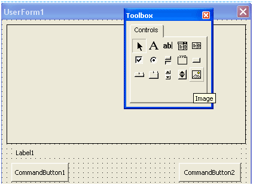
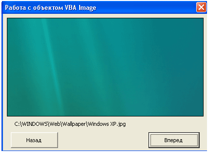

августа 31, 2015
августа 31, 2015  admin
admin Элемент управления Image
августа 31, 2015 admin
Пожалуй, самый простой из элементов управления. Позволяет отобразить на форме рисунок в одном из распространенных форматов, который будет реагировать на щелчок мышью (а может просто использоваться для украшения формы).

Рис. 1 Элемент управления Image на панели ToolBox

Рис. 2 Элемент управления Image на форме
У самого объекта Image VBA есть свойство Picture, которое хранит доступ к рисунку. Для загрузки изображения мы будем использовать функцию VBA LoadPicture, который в качестве параметра мы будем передавать путь к изображению.
Что бы показать пример использования компонента VBA Image добавим в проект новую форму (меню Insert\UserForm), назовем ее ImageForm (свойство Name), также добавим в проект новый модуль и назовем его ImageModule (свойство Name).
В редакторе кода для модуля пропишем:
Sub ImageModule()
ImageForm.Show
End Sub
Тут мы прописываем процедуру ImageModule, которая предоставляет наш модуль. В теле процедуры мы говорим, что при вызове текущего макроса нужно показать форму с именем ImageForm.
Добавим на поверхность компонент vba Image, под ним разместим компонент Label, а в самом низу разместим две кнопки (компонент CommandButton). Внешний вид формы можно увидеть на рисунке ниже.

Теперь настал самый интересный момент в плане программирования. В редакторе кода для формы пропишите следующий код:
‘ Глобальная переменная
Dim i As Integer
‘ Процедура получения доступа к каталогу с файлами
Private Sub GetFolders()
Dim FSO As Object,
Drive As Object, GetFiles As Object
Dim j As Integer
j = 1
‘ формируем ссылку на объект FileSystemObject
Set FSO = CreateObject(“Scripting.FileSystemObject”)
‘ получаем доступ к папке с рисунками
Set Drive = FSO.GetFolder(“C:\WINDOWS\Pictures\”)
‘ VBA Image
‘ фрмируем коллекцию каталогов
Set GetFiles = Drive.Files
‘ Если значение i больше количества файлов
If i > GetFiles.Count Then
i = i – 1
End If
‘ Если значение i меньше количества файлов
If i < 1 Then
i = i + 1
End If
‘ Начинаем перебор файлов
For Each OFiles In GetFiles
If j = i Then
Image1.Picture = LoadPicture(OFiles.Path)
Label1.Caption = OFiles.Path
End If
j = j + 1
Next
End
Sub Private Sub CommandButton1_Click()
i = i – 1
Call GetFolders
End Sub
Private Sub CommandButton2_Click
‘ VBA Image
i = i + 1
Call GetFolders
End Sub
Private Sub UserForm_Initialize()
CommandButton1.Caption = “Назад”
CommandButton2.Caption = “Вперед”
Label1.Caption = “Путь к рисунку”
ImageForm.Caption = “Работа с объектом VBA Image”
End Sub
В самом начале мы объявляем переменную i, которая является глобальной. Она нужна нам как счетчик, и будет хранить количество нажатий на кнопки. Процедура GetFolders отвечает за доступ к каталогу C:\WINDOWS\Pictures\, в котором хранятся файлы-рисунки, используемые операционной системой для обоев. В вашем случае, путь может отличаться. В цикле for each происходит обработка всех файлов в заданной папке, там же происходит проверка условия – мы сравниваем значение переменной i и переменной j (данная переменная хранит номер обрабатываемого файла). По сути, условие нужно для того, что бы мы могли пролистывать рисунки из папки.

Процедуры CommandButton1_Click и CommandButton2_Click отвечают за обработку нажатий на кнопки, расположенные на форме. В обеих процедурах происходит вызов процедуры GetFolders(), разница лишь в том, что в CommandButton1_Click происходит уменьшение значения i, а в CommandButton2_Click – происходит увеличение значения переменной i.
Процедура UserForm_Initialize выполняется сразу при запуске формы, тут мы прописали заголовок формы, названия кнопок и начальное значение для метки (Label).
В итоге, при запуске макроса перед нами появится форма, при нажатии на кнопки “Вперед” и “Назад” происходит пролистывание рисунков из заданной папки, сам рисунок будет отображаться на поверхности формы (компонент VBA Image). Метка будет хранить путь к рисунку.